第5章 用约翰·迈吉的基准点法代替道氏理论
我曾开玩笑地把道氏理论比作古罗马人的一种占卜术——这种占卜术通过检查动物或鸟类的内脏来预测未来。道氏理论分析师观测市场动向，并大胆预测在当前市场下应该买入、卖出还是持有。他们貌似应该坐在德尔菲神殿 [1] 的三足凳上吞云吐雾，解读神谕。而且，他们可能一天会得出几个不同的结论（此处并非对道氏理论家不敬。我有几个最好的朋友就是道氏分析师）。这一点促使我们寻求更好的方法。这个方法就出现在第28章。在那一章中，迈吉概括了（我进一步解释了）一种特别适合长线投资的方法。富人越来越富有的原因之一就是他们采用了这种投资方法。他们正确地评估企业状况和经济形势，持有足够的仓位，这些持仓在牛市中为他们带来了波段交易者和中线交易者无法企及的回报。在某些情况下，富人也会运用道氏理论。不论用什么理论，他们都不会随波逐流，除非长期趋势真正发生变化。
长线投资从来都不容易，除非是资本充足的投资者。使用迈吉的基准点法（Basing Points Procedure）有可能让大众投资者根据道氏理论的时间段投资。为了展示这个方法的强大，我进行了一些研究。其中最重要的一个是使用道氏理论来研究1900年以来的道琼斯工业指数。通过这项研究，我们验证了道氏理论的有效性。
分形市场理论
分形是所有交易者熟知的一个概念，由本华·曼德博（Benoit Mandelbrot）提出，用以描述股价变动的特点。“分形”的字面含义是在一个整体中，不同大小的组成部分都具有相同的形状 。而在股市中分形代表的则是这样的趋势特征：2分钟K线图所展现的形态和特征与日线图、周线图相同。也就是说，如果给你一张图表，你无法仅仅根据图表上的数据判断出该表的时间单位。当读到第36章有关移动平均线的内容时，你会发现根据10天移动均线进行交易的频率是200天移动均线的10倍。关注的时间单位越短，就意味着你越容易被市场的“噪声”所左右。这也是日内交易者极少成功的原因之一，市场噪声和随机的价格变动大大增加了数据分析的难度。我认识的一些投资者都是根据周线数据交易，也就是说，在他们分析的图表上，每根K线代表的是一周的交投情况。他们的交易频率自然没有日内交易者高。
考虑到上述原因，我用周线数据测试了基准点法的有效性。在定位基准点时，我分析的是3周的数据，而不是3天的数据。我分析了工业平均指数的所有数据，并测算了如果当时使用迈吉基准点法会带来怎样的回报。虽然回报算不上那么惊人，但也相当丰厚。如果再考虑到操作特点，特别是操作的便捷性，那么迈吉基准点法毫无悬念地完胜道氏理论。
迈吉基准点法能收获比道氏理论更丰厚的回报，而且更易于操作。在本章后半部分，我会用图表来展示测算结果。
·应用迈吉基准点法和道氏理论获得的利润分别是537437.54美元和492597.38美元，基本持平。
·迈吉基准点法变体2获得的利润是881172.13美元。
·迈吉基准点法和道氏理论的年复合增长率差不多，迈吉基准点法变体1为7.9%，变体2为8.37%，道氏理论为7.87%。
·两种方法的风险水平也差不多：道氏理论的平均回撤水平是13.78%，迈吉基准点法是16%。前者的最大回撤水平是25.3%，后者是30%。
·如果只做多不做空，那么道氏理论有36%的时间空仓，迈吉基准点法的空仓时间则为35%。这一点很少受到道氏理论派的关注，也没有纳入对迈吉基准点法的评价中。但空仓时间却极为重要，因为这表示不论是道氏理论还是迈吉基准点法，都有超过1/3的时间是无风险的。但由于计算空仓期的资金回报过于复杂，此处不予讨论。
·鉴于回撤和止损止盈方法的差异，迈吉基准点法在操作上更为优越。1900年以来，根据道氏理论，投资者需交易37次，而根据迈吉基准点法只需交易25次。考虑到两者在风险及回报上的相似性，交易次数越少越好，因为这意味着成本更低，亏损的概率也更小。换句话说，投资者赚得更多。
简而言之，对于真正的长线投资者，迈吉基准点法是道氏理论的最佳替代品。基准点法可以用于分析周线图，因为它在周线图上的长线效力已有明证。它还可以用于分析日线图，给出更频繁的信号。
基准点法可通过两种方式来应用，我将它们称为“变体1”和“变体2”。变体1根据波段低点设置止损位。变体2除了考虑波段低点外，还考虑新波段高点（见第28章）。表5-1列出了按照变体1进行的交易。表5-2列出了按照变体2进行的交易。图5-2和图5-3显示了各笔交易的点位，这两张图可从网页http://www.edwards-magee.com/supercharts.html 上下载。你可将下载后的图放大，以便更仔细地观察它们。
读者和投资者有充分的理由对学术研究抱怀疑态度。每天早晨，我们的邮箱里总是塞满华尔街推销员寄来的各类“必胜秘籍”“速富宝典”。它们总是号称能为你赚取可观利润，但其实都是纸上谈兵。相比之下，迈吉基准点法已用于股市实战多年，其效力已得到验证。它在2008年1月提示投资者离场或做空，直到2009年3月才翻多。它在2011年7月底提示投资者多翻空，从而避开即将爆发的希腊债务危机。读者可在网站http://www.edwards-magee.com 上找到我们当时的评论文章，查证我们的说法。以下是我们当时绘制的一些图。（见图5-2和图5-3。图5-1展示了2007年股市见顶后建议在2008年年初做空的详细分析。）
表5-1 按照迈吉基准点法变体1进行的交易
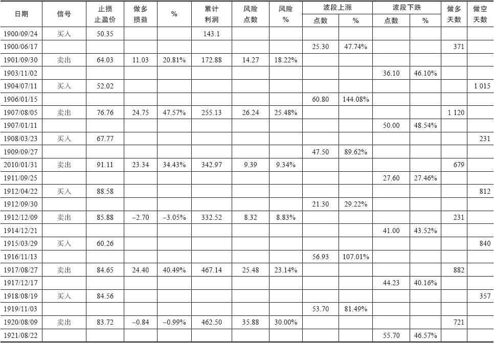
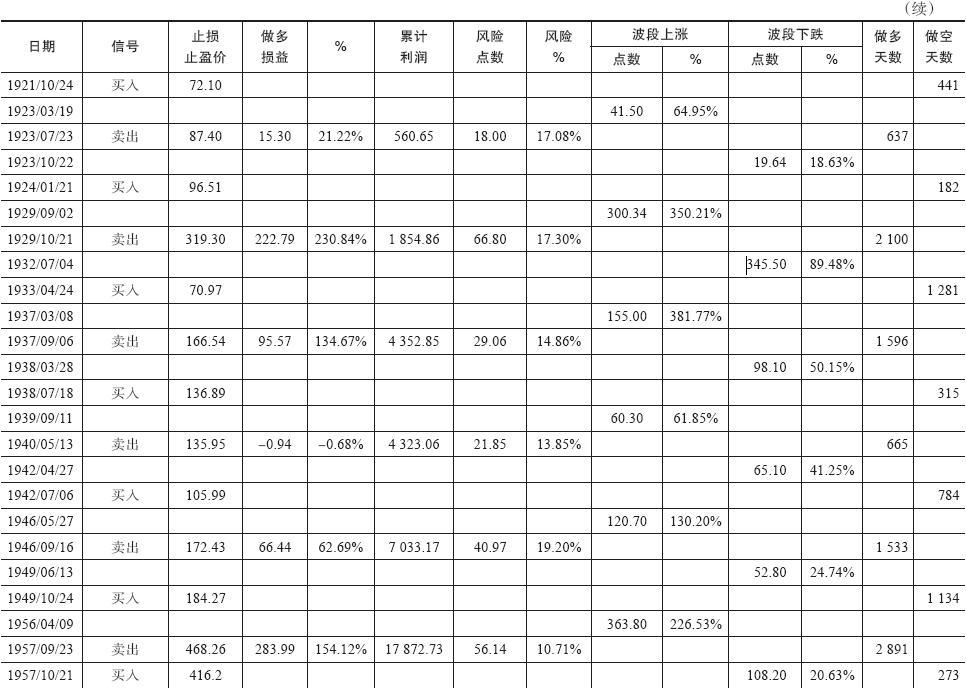
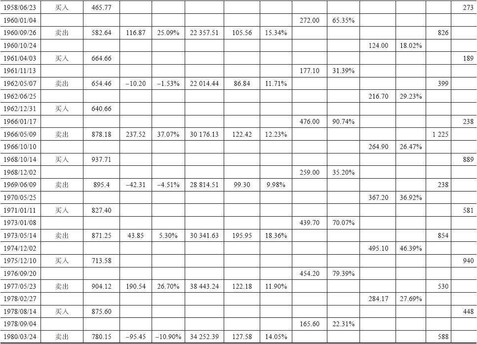
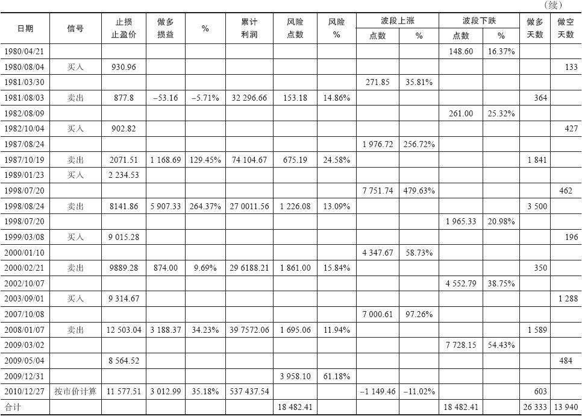
表5-2 按照迈吉基准点法变体2进行的交易
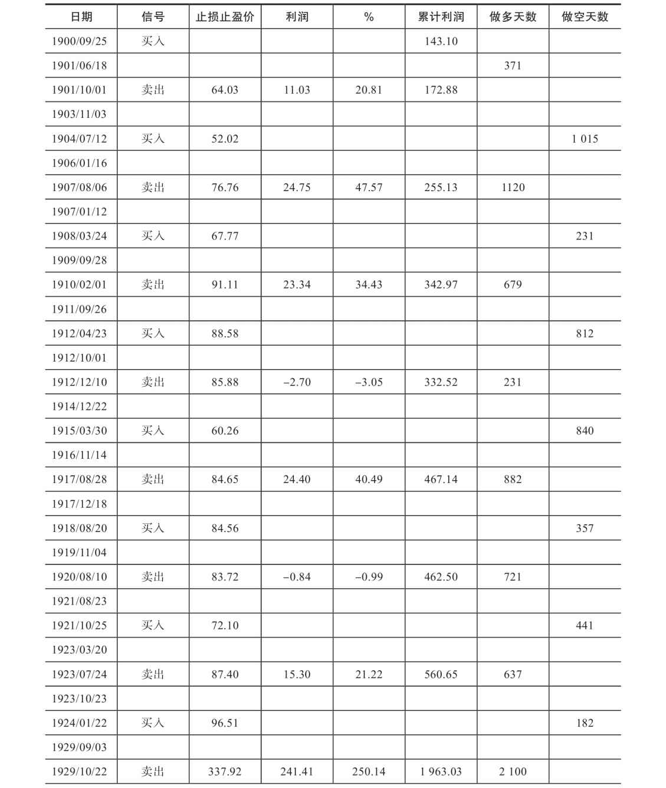
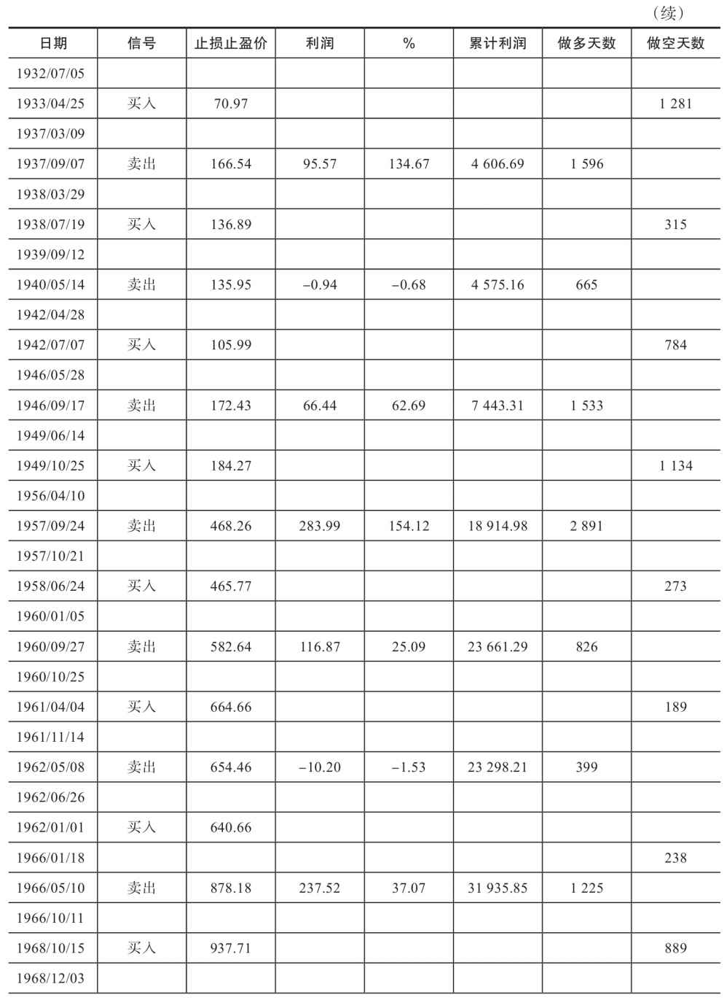
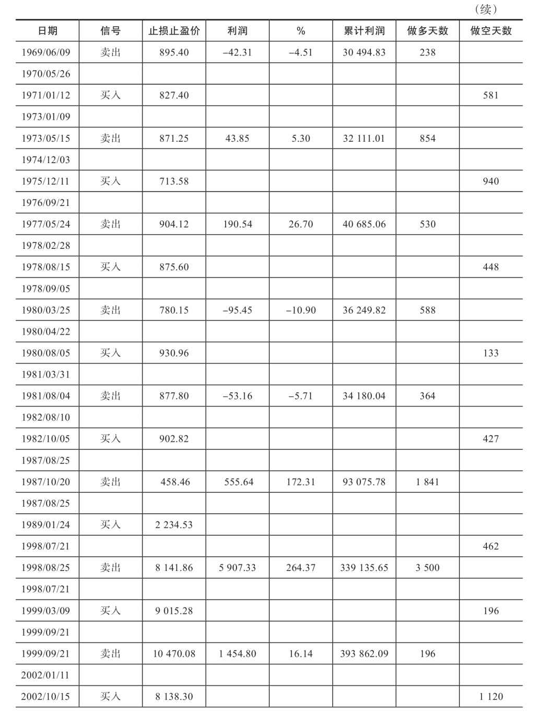
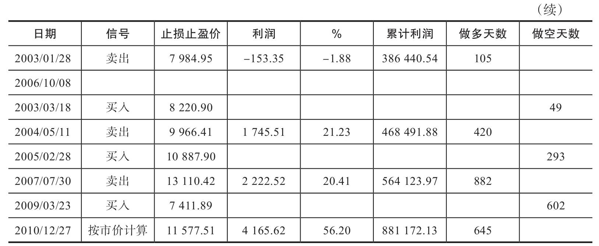
《圣鸡、圣杯与道氏理论》一书详细介绍了此项研究的情况，还说明了怎样用迈吉基准点法取代道氏理论，这本书可在网站http://www.amazon.com 上买到。
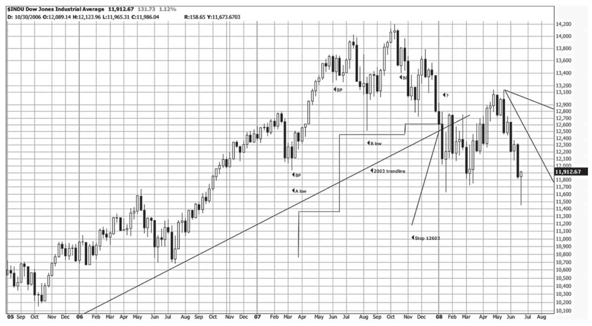
图5-1 道琼斯工业平均指数2008年见顶时怎样用基准点法交易。这张图无疑是过去20年里最有意思的图之一。在图上我们能看到，随着波段低点的逐级走高，止损位也逐步抬升。其中有一两个点特别重要。按基准点法确定的止损位很接近根据头肩形的颈线算出的止损点。按基准点法确定的止损位也非常接近从2003年起的长期趋势线。根据“多种技术方法相互印证”的法则，使用多种技术方法得出的结论比只用一种技术方法得出的结论可靠得多。直到2009年3月，基准点法才提示投资者空翻多
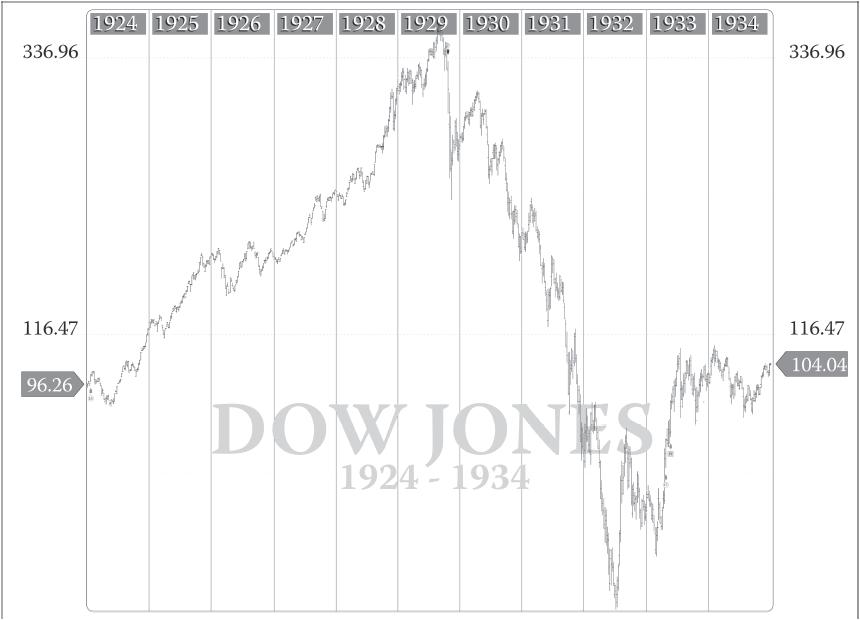
图5-2 道琼斯工业平均指数1924～1934年走势图。图上分别标出了道氏理论和迈吉基准点法发出的信号。这张图对应的时期是图5-3的一部分。读者可看到两种方法下交易活动的质量和相似性。这两种方法都能帮助投资者避开大量风险。图中数字与前表中对应
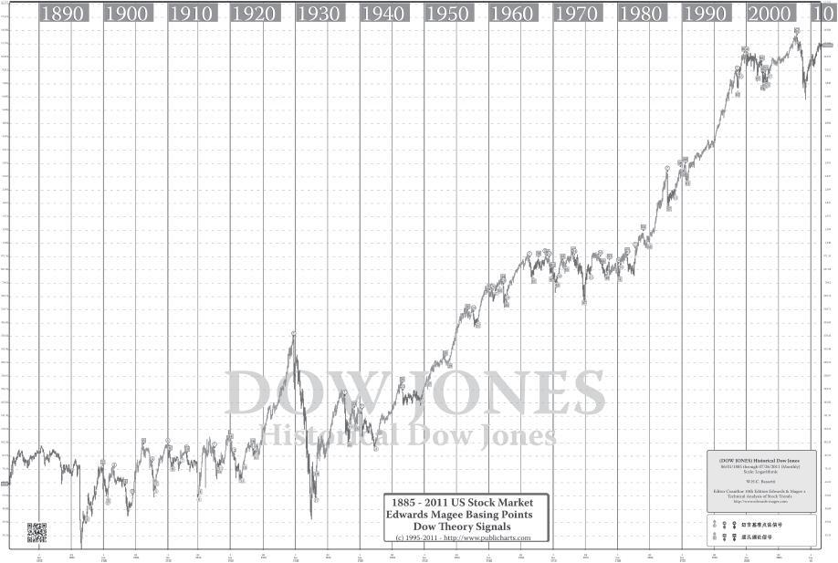
图5-3 道琼斯工业平均指数走势图。这是关于该指数的最有意思的图之一。图上显示道氏理论和迈吉基准点法发出的买卖信号。具体细节难以反映在这张图上。你可从网页http://www.edwards-magee.com/supercharts.html 上下载一个可放大的版本
[1] 位于雅典附近的一座神殿。—译者注